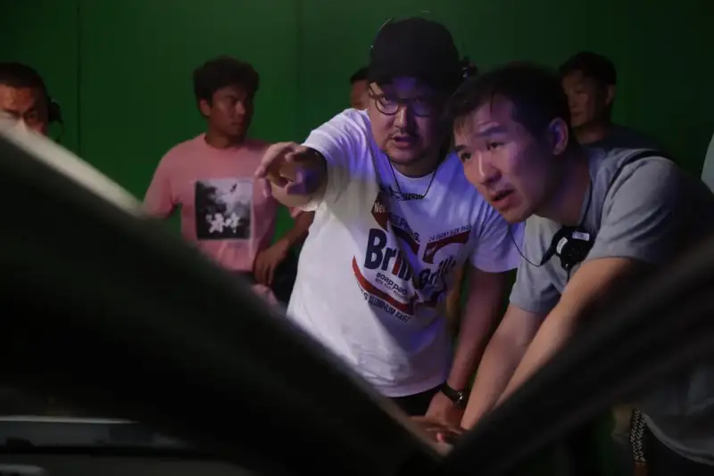
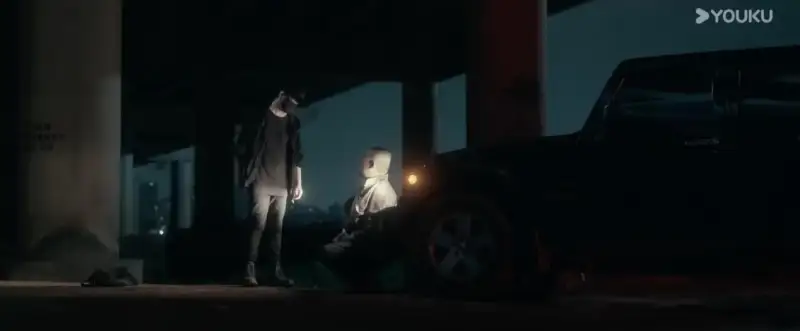
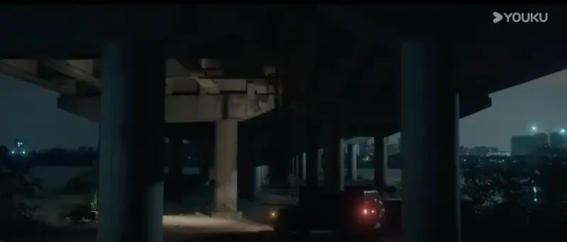
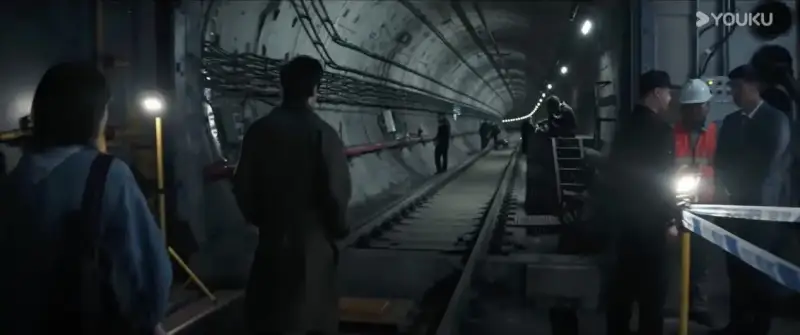
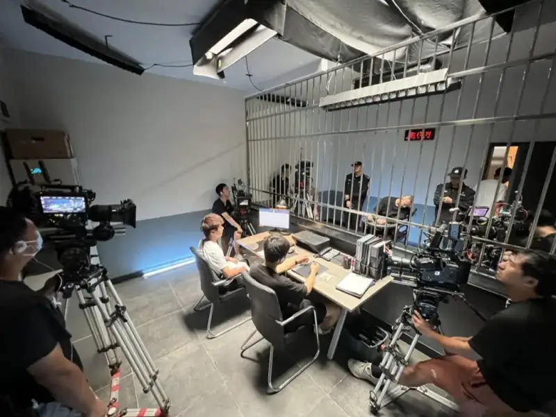
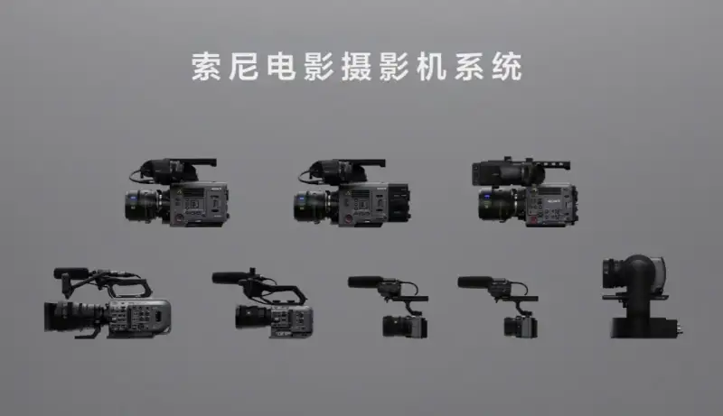

As a phenomenon-level web series, Day and Night: Dawn has once again drawn viewers to this IP. As the sequel to Day and Night, it not only carries on the suspense of the earlier work, but also makes bold innovations in narrative and in technology. The director of photography, Lin Zejun, uses his rich creative experience and sharp artistic sense to tell a tense, suspenseful story in images, and makes a work that is both deep and beautiful.

Lin Zejun on the set of Day and Night: Dawn (behind the scenes)
In the interview below, Lin Zejun shares not only the original idea behind Day and Night: Dawn and the challenges of shooting it, but also the technical strengths of the Sony CineAltaV 2 camera, and how a carefully designed DIT workflow and LUT use ensure high-quality media management and a consistent visual style. From pre-production to color grading, every step shows his devotion to the art of the image and his care for technical detail.
It is especially worth noting that Mr. Lin shares in detail the solutions for complex scenes such as low light, narrow spaces, and extreme exposure. These examples show not only his skill in using technology and creativity to solve problems, but also reveal many technical and artistic secrets behind modern film and TV production. By looking at these technical details, we can understand more deeply the complexity and professionalism of filmmaking, and feel how Sony imaging technology helps film creation move forward and brings endless possibility to creators.
Q: Mr. Lin, could you introduce yourself, and briefly share some of the projects you have worked on?
A: Hello, I am Lin Zejun. I studied film at New York University. After graduation, I shot some independent films in the United States. That period was exactly the transition from film to digital, so the subjects and types of production I worked on were quite varied.
Then I went to Hong Kong and learned a lot of valuable experience on Hong Kong film sets. Around 2011 I came to Beijing, and took part in several films and TV series, including theatrical films such as Truth Zone, and TV series such as Hidden and Great and Blossoms. In Blossoms, I was lucky to work with Mr. Bao Dexi as a camera operator, and that was a very important learning opportunity.
Q: You studied in the US and have rich shooting experience in both the US and China. If you compare the industries, what are the main differences you feel?
A: The film and TV industries in the US and China really differ a lot. The US industry is highly industrialized. Each role has a clear division, and work hours and rest time are clearly set. This actually raises the efficiency of on-set shooting, and lets the team put more energy into creation. A Chinese crew, by contrast, shows great flexibility and creativity. The members are very active and can quickly respond to all kinds of sudden changes.
In cameras and hardware, Chinese equipment is not inferior to American, and may even be more advanced, but the types used are relatively similar. People are used to familiar brands and models and to common solutions. By comparison, American production teams pay more attention to the personal needs of a project, and try some non-traditional equipment and techniques.
Q: As you said, when you entered the field it was the film-to-digital transition. You have shot many films. How do some of that experience carry over to digital cinematography? Where do you see the advantage of digital?
A: The core principles of film and digital are similar, such as controlling tone and understanding the exposure curve. But in the digital age the creative space is larger, especially in dynamic range. For example, a digital camera renders the shadows with more delicacy. In the film era, the limits of the light-sensitive material made shadow detail hard to keep. Now a digital camera can capture more detail in low light, and with a stronger sense of realism.
For example, Day and Night: Dawn has many night scenes, and we shot them with only the existing streetlights or neon signs. This fully fits the logic of the scene, and this experience would have been hard to imagine in the film era. Although film and digital work differently, as imaging technology advances, digital cameras can reproduce the texture of film well, and even surpass it in some ways.
Q: Speaking of Day and Night: Dawn, how did you take on this project? Compared with Day and Night before, what breakthroughs did you make in this one?
A: The director of Day and Night: Dawn, Liu Yingjian, is a friend of many years. He was the director of photography on Day and Night. This is his first time directing a series, and he originally planned to do both directing and photography. But because the directing workload is huge, he decided to invite me to help and ensure the quality of the image.
After I took on the project, my first task was to keep consistency with the first season, while making moderate adjustments and upgrading the image. This required that, in both the continuity of the series and the physical time and space of the story, the audience should not feel a jolt, though I could not fully copy the style of the first season. In creative detail, Day and Night: Dawn is actually more refined, thanks to the groundwork and the good reputation of Day and Night. Many of the production constraints I met while shooting the earlier work were well solved in Day and Night: Dawn, which gave me more resources to call on to finish the shoot.
Compared with Day and Night, many scenes this time were built on a soundstage. By building the main sets on the stage, we could optimize the lighting design and use a lot of soft light to make the layers and texture of the frame stronger. The visual result improved a lot. We also used existing light sources, such as streetlights and car headlights, to strengthen the realism and the on-set feel of the scene.
For example, there is a scene of a crime scene under an overpass at night, with city lights in the background and the outline of the city in the distance. I used a high ISO of 3200 to get a base exposure, and then used some lights at reduced power to match the brightness of the city background. In this way I successfully captured the density of the night sky and the detail of the city background.


A clip from Day and Night
The whole scene looks more real and more vivid. The audience can feel a real night mood, as if they were in that environment, and we also saved a lot of time and resources in production.
Q: For Day and Night: Dawn, you chose the Sony CineAltaV 2. Can you talk about your criteria for choosing this camera, and your experience with its split-body design on real shoots?
A: The example above already shows what won me over. There are two main reasons for choosing the Sony CineAltaV 2: image quality and dynamic range, and operating efficiency and teamwork. The CineAltaV 2 not only has excellent image quality, but also works efficiently in complex shooting conditions. In dual-unit or multi-camera shooting in particular, its stability and color consistency are excellent. The dual native ISO greatly raises my shooting efficiency.
The split-body design of the CineAltaV 2 was also a highlight of this shoot. It let us place the camera in narrow or special positions, and even mount it directly on an actor. In a scene where twin brothers argue, we used the split body to wear the camera on the actor. The CineAltaV 2 had a Lensbaby (a tilt-shift lens) on it, creating a point-of-view effect. This way of shooting not only strengthened the dramatic tension, but also let the audience feel the character's inner confusion. The result of this frame was very satisfying.
Q: You mentioned that the dual native ISO of the CineAltaV 2 greatly raises efficiency. In what ways?
A: The dual native ISO (800 and 3200) of the CineAltaV 2 is a real advantage. At night or in low light, we can quickly change the ISO without worrying about noise. This lets us keep shooting after dark, and even get a high-quality image in only weak ambient light.
Day and Night: Dawn has a scene where a body is found in a subway tunnel. The tunnel itself has fixed lighting. Shooting with the Sony CineAltaV 2, we mainly relied on these real light sources, and only added a little light on the actors' faces. We used only a few small tubes and prop lights. The frame successfully created a dark, tense mood while keeping the realism of the scene. This also raised the efficiency of the art and lighting departments. I estimate that, after using the CineAltaV 2, I could shoot at least half an hour more of usable takes each day. Over time, this amount of material is really remarkable for production efficiency.

A clip from Day and Night
Also, in exposure control with the dual native ISO, I can share one trick. During the shoot, I often set the ISO to 1600 in the EI 3200 high-sensitivity mode. This keeps my creative intent for a dark image, while giving the CMOS one more stop of shadow information. In effect, it leaves more room for color grading. The image quality this gives is very solid, and I have full confidence in the frame.
Also, Director Liu Yingjian, who has much photographic experience, pays special attention to depth of field. Because we often shoot with several cameras at once, we cannot avoid using a long lens for close-ups and a wider focal length for wide shots. The director does not want the close-up to be so shallow that it loses all the environment, nor the wide shot to be so deep that the foreground and background are both too sharp and lack a cinematic feel. So we shoot the close-ups and the wide shots with very different apertures. In the most extreme case, camera A might be 35mm at T/1.8, while camera B uses 200mm at T/16. The aperture between the two positions differs by five or six stops of brightness. This would have been a huge problem for any camera in the past, and even more trouble on film. The step-by-step built-in ND of the Sony CineAltaV 2, together with the dual native ISO, lets me quickly adjust and compensate the exposure to keep the brightness consistent across cameras. Material shot at the same time in the same scene at EI400 and EI3200 can be cut together seamlessly, with no matching problem in image quality.

The CineAltaV 2 on the set
Q: In Day and Night: Dawn, how did you design the tone? What role did the LUT play?
A: To keep consistency with the first season, I designed a stylized LUT, with slightly higher contrast and darker shadows. This gives the tone a safe zone. If the image rendered by this LUT looks normal on the monitor, it proves that, with the high dynamic range of the CineAltaV 2, I can get more delicate image and tone in color grading. This is one way it is used.
On the other hand, the LUT I designed helps match different cameras and units, and keeps the visual style of the whole series consistent. During early camera tests, I ran a brutal test of the dynamic range of the CineAltaV 2. I deliberately over- or under-exposed the frame by five stops, and then tried to pull it back in post. Using the X-OCN codec, I found that even under extreme exposure, the frame still recovers detail well, especially the skin tone I care about so much.
So, with this full test of the front and back end, I have confidence in the camera, and on set I do not worry too much about exposure and tone.
Q: In Day and Night: Dawn, which resolution and codec did you choose?
A: I chose 8.2K resolution and the X-OCN ST codec. At first, thinking of the amount of material and the pressure on post, I planned to use a lower resolution. But the post supervisor, Chen Kai, suggested we use the X-OCN ST codec.
After testing, I found that X-OCN ST fully met our needs. Using the full-frame 8.2K resolution mainly gives more room for image and VFX work, and makes full use of the sensor. Only this way can the advantages of the CineAltaV 2 be shown to the fullest.
Q: From your experience, how do you rate the Sony CineAltaV 2?
A: After using the CineAltaV 2, I feel it can fully become one of my regular camera systems. Compared with earlier Sony models, the color of the CineAltaV 2 has improved again, and it is especially excellent in skin tone and image texture. Even under extreme conditions, such as very dark environments or complex light, the CineAltaV 2 still gives solid color and delicate skin tones.
Also, its dual native ISO and split-body design greatly raise shooting efficiency and creative space. It is a general-purpose camera. Whether for commercials, films, or TV series, the CineAltaV 2 can handle the demand.
About the Sony CineAlta camera system

The Sony CineAlta camera system
Sony is committed to faithfully realizing the creator's intent through innovative technology. Drawing on its rich experience in film and TV production, Sony offers a rich, efficient creative shooting system to meet the varied needs of high-quality film creation. The Sony CineAlta camera system is centered on the CineAlta series, including the much-praised digital cinema cameras CineAltaV, CineAltaV 2, and CineAltaB. It includes the full-frame cinema camera FX9, popular in documentary and TV work; the full-frame PTZ camera FR7; the flexible FX6; the compact, portable FX3; and the FX30, the first cinema camera for the young. CineAltaB is made for diverse film and TV creation, and enriches the Sony CineAlta system with more room for imagination. Sony also offers the Crystal LED display, with high contrast and rich color, and a set of virtual production tools, to improve the workflow and give film and TV creators more freedom.